Omvendt avgiftsplikt er en spesiell ordning innenfor merverdiavgiftssystemet hvor kjøperen, ikke selgeren, blir ansvarlig for å beregne og betale MVA til staten. Dette systemet brukes i spesifikke situasjoner for å forenkle avgiftsinnkrevingen og forhindre avgiftsunndragelse.
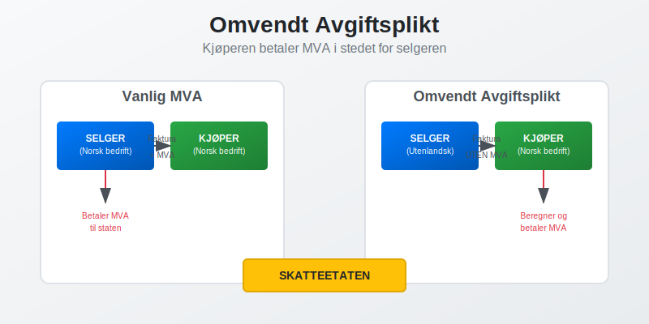
Hva er Omvendt Avgiftsplikt?
Omvendt avgiftsplikt innebærer at ansvaret for å håndtere MVA flyttes fra selger til kjøper. I stedet for at selgeren legger til MVA på fakturaen og betaler denne til staten, må kjøperen selv beregne og innbetale avgiften.
Grunnleggende Prinsipper
Omvendt avgiftsplikt bygger på følgende prinsipper:
- Ansvarsskifte - kjøperen overtar selgerens MVA-ansvar
- Selvfakturering - kjøperen må selv beregne og rapportere MVA
- Samtidig fradrag - kjøperen kan ofte trekke fra samme MVA som inngående avgift
- Forenkling - reduserer administrative byrder for utenlandske leverandører
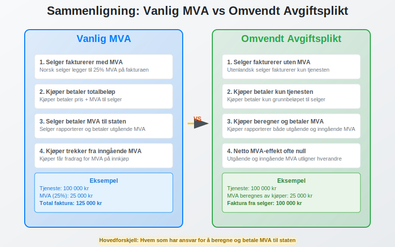
Når Gjelder Omvendt Avgiftsplikt?
Tjenester fra Utlandet
Omvendt avgiftsplikt gjelder når norske foretak kjøper tjenester fra utenlandske leverandører:
- Konsulenttjenester og rådgivning
- IT-tjenester og programvareutvikling
- Markedsføringstjenester og reklame
- Juridiske tjenester og revisjon
- Tekniske tjenester og ingeniørarbeid
- Utdanning og kursvirksomhet
Elektroniske Tjenester
For elektroniske tjenester gjelder omvendt avgiftsplikt når:
- Tjenesten leveres elektronisk
- Leverandøren er etablert utenfor Norge
- Kjøperen er et norsk foretak
- Tjenesten brukes i Norge
Merk: For digitale tjenester solgt til privatpersoner, gjelder ikke omvendt avgiftsplikt; disse omfattes av VOEC-ordningen.
Varer med Installasjon
Omvendt avgiftsplikt kan også gjelde for:
- Varer levert med installasjon eller montering
- Bygge- og anleggsarbeider utført av utenlandske entreprenører (Hva er en Entreprenør?)
- Reparasjoner av fast eiendom
| Situasjon | Omvendt avgiftsplikt | Vanlig MVA |
|---|---|---|
| Norsk leverandør til norsk kunde | Nei | Ja |
| Utenlandsk tjeneste til norsk foretak | Ja | Nei |
| Utenlandsk vare til norsk forbruker | Nei | Ja (ved import) |
| Elektronisk tjeneste fra utlandet | Ja (til foretak) | Nei |
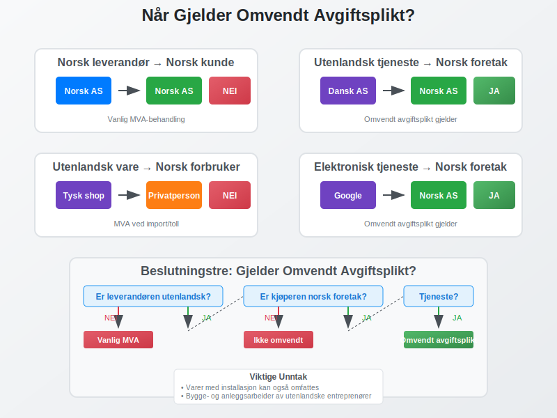
Hvordan Fungerer Omvendt Avgiftsplikt?
For Kjøperen (Norsk Foretak)
Når du kjøper tjenester som omfattes av omvendt avgiftsplikt:
- Motta faktura uten MVA fra utenlandsk leverandør
- Beregn MVA selv (vanligvis 25%)
- Rapporter både utgående og inngående MVA i MVA-meldingen
- Trekk fra inngående MVA hvis du har fradragsrett
For Selgeren (Utenlandsk Leverandør)
Den utenlandske leverandøren:
- Fakturerer uten norsk MVA
- Markerer fakturaen med “omvendt avgiftsplikt”
- Slipper å registrere seg i Norge
- Har ikke ansvar for norsk MVA
Praktisk Eksempel
Situasjon: Norsk aksjeselskap kjøper IT-konsulentjenester for 100 000 kr fra dansk selskap.
Prosess:
- Dansk selskap sender faktura på 100 000 kr uten MVA
- Norsk selskap beregner MVA: 100 000 kr × 25% = 25 000 kr
- I MVA-meldingen rapporteres:
- Utgående MVA: 25 000 kr
- Inngående MVA: 25 000 kr (med fradragsrett)
- Netto MVA-effekt: 0 kr (hvis full fradragsrett)
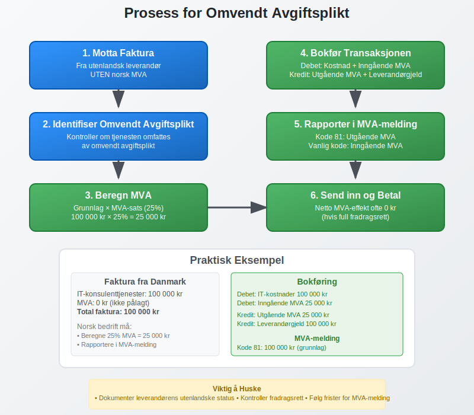
Bokføring av Omvendt Avgiftsplikt
Kontering ved Kjøp
Når du bokfører kjøp med omvendt avgiftsplikt:
Eksempel: Kjøp av konsulenttjenester for 100 000 kr
Debet: Kostnader (konsulenttjenester) 100 000 kr
Debet: Inngående MVA 25 000 kr
Kredit: Utgående MVA 25 000 kr
Kredit: Leverandørgjeld 100 000 kr
Spesielle Kontoer
For omvendt avgiftsplikt brukes ofte:
- Konto 2740 - Utgående MVA omvendt avgiftsplikt
- Konto 2700 - Inngående MVA omvendt avgiftsplikt
- Konto 2701 - Inngående MVA ikke fradragsberettiget
Dokumentasjon
Viktig dokumentasjon inkluderer:
- Originalfaktura fra utenlandsk leverandør
- Beregning av MVA-grunnlag
- Dokumentasjon på leverandørens utenlandske status
- Beskrivelse av tjenesten som er levert
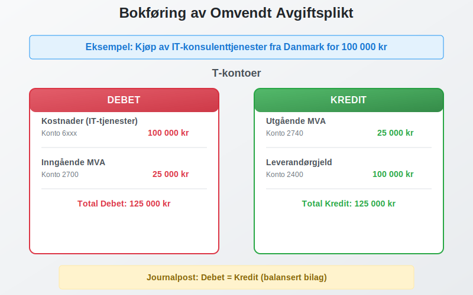
Rapportering i MVA-melding
Koder for Omvendt Avgiftsplikt
I MVA-meldingen brukes spesifikke koder:
| Kode | Beskrivelse | Grunnlag | MVA |
|---|---|---|---|
| 81 | Kjøp av tjenester fra utlandet (25%) | Ja | Ja |
| 82 | Kjøp av tjenester fra utlandet (15%) | Ja | Ja |
| 83 | Kjøp av tjenester fra utlandet (12%) | Ja | Ja |
| 86 | Kjøp av klimakvoter/gull (25%) | Ja | Ja |
| 88 | Kjøp av varer med installasjon (25%) | Ja | Ja |
Utfylling av MVA-melding
Trinn for rapportering:
- Oppgi grunnlag i relevant kodelinje (81, 82, 83, etc.)
- Beregn utgående MVA automatisk eller manuelt
- Rapporter inngående MVA på vanlig måte (hvis fradragsrett)
- Kontroller at beløpene stemmer med regnskapet
Frister og Innlevering
MVA-melding med omvendt avgiftsplikt følger samme frister:
- Månedlig for store virksomheter
- To-månedlig for mellomstore virksomheter
- Årlig for små virksomheter
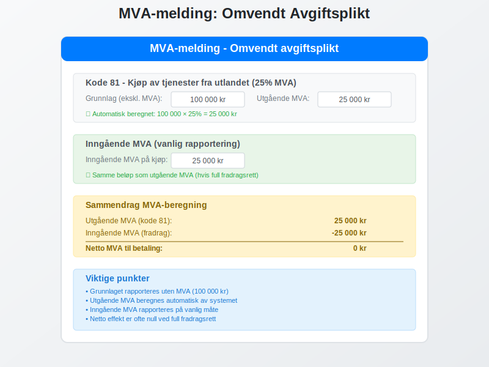
Fradragsrett ved Omvendt Avgiftsplikt
Når Har Du Fradragsrett?
Fradragsrett for inngående MVA ved omvendt avgiftsplikt avhenger av:
- Virksomhetens aktivitet - må være avgiftspliktig
- Tjenestens bruk - må brukes i avgiftspliktig virksomhet
- Registreringsstatus - må være registrert i MVA-registeret
- Dokumentasjon - må ha tilstrekkelig dokumentasjon
Full Fradragsrett
Full fradragsrett gjelder når:
- Tjenesten brukes 100% i avgiftspliktig virksomhet
- Foretaket kun driver avgiftspliktig aktivitet
- Alle betingelser for fradrag er oppfylt
Delvis Fradragsrett
Delvis fradragsrett kan gjelde når:
- Tjenesten brukes både i avgiftspliktig og fritatt virksomhet
- Foretaket har blandet aktivitet
- Fordeling må dokumenteres og beregnes
Ingen Fradragsrett
Ingen fradragsrett gjelder når:
- Tjenesten brukes i MVA-fritatt virksomhet
- Kjøperen ikke er registrert for MVA
- Tjenesten er til privat bruk
| Bruksområde | Fradragsrett | Eksempel |
|---|---|---|
| 100% avgiftspliktig virksomhet | Full | IT-system for salgsvirksomhet |
| Blandet bruk | Delvis | Regnskapssystem for blandet virksomhet |
| MVA-fritatt virksomhet | Ingen | Konsulenttjenester for bank |
| Privat bruk | Ingen | Personlig rådgivning |
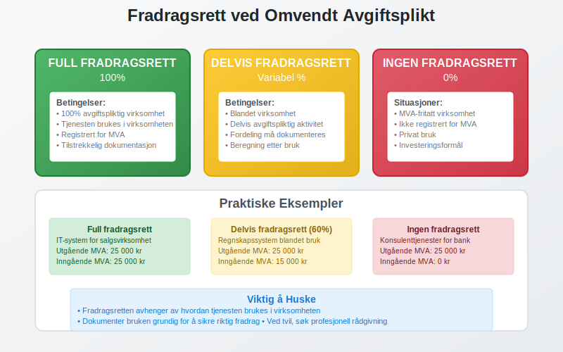
Vanlige Feil og Fallgruver
Typiske Feil
Vanlige feil ved omvendt avgiftsplikt:
- Glemmer å beregne MVA på kjøp fra utlandet
- Feil MVA-sats - bruker feil prosentsats
- Manglende rapportering i MVA-melding
- Feil kontering i regnskapet
- Manglende dokumentasjon av leverandørens status
Konsekvenser av Feil
Feil håndtering kan føre til:
- Tilleggsskatt på 20% av MVA-beløpet
- Forsinkelsesrente fra forfallsdato
- Kontrollavgift ved grov uaktsomhet
- Revisjoner fra Skatteetaten
Hvordan Unngå Feil
Forebyggende tiltak:
- Etabler rutiner for identifisering av omvendt avgiftsplikt
- Opplær ansatte i regelverket
- Bruk ERP-systemer med MVA-funksjonalitet
- Dokumenter alle transaksjoner grundig
- Gjennomgå MVA-meldinger før innsending
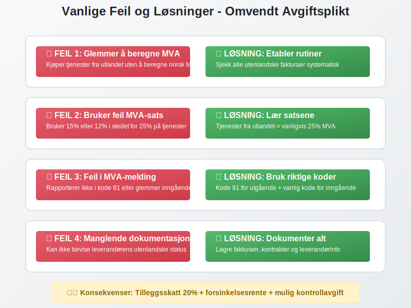
Internasjonale Aspekter
EU-regler
EU-direktiver påvirker omvendt avgiftsplikt:
- Stedsregler for tjenester
- B2B-transaksjoner mellom EU-land
- Elektroniske tjenester og digitale plattformer
- Harmonisering av regler
Brexit-konsekvenser
Brexit har endret reglene for:
- Handel med Storbritannia
- Tjenestekjøp fra britiske selskaper
- Dokumentasjonskrav
- Tollbehandling
Globale Trender
Internasjonale utviklingstrekk:
- Økt digitalisering av tjenester
- Strengere dokumentasjonskrav
- Automatisert rapportering
- Harmonisering av regler
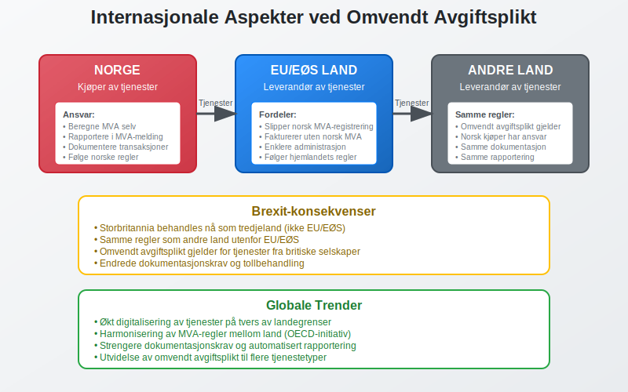
Digitalisering og Fremtiden
Teknologiske Løsninger
Moderne teknologi forenkler omvendt avgiftsplikt:
- Automatisk gjenkjenning av utenlandske leverandører
- Integrerte MVA-beregninger i regnskapssystemer
- Digital dokumentasjon og arkivering
- API-integrasjoner med Skatteetaten
Fremtidige Endringer
Forventede utviklinger:
- Mer automatisert rapportering
- Strengere kontroll og overvåking
- Utvidelse til flere tjenestetyper
- Harmonisering med EU-regler
Anbefalinger for Bedrifter
Forberedelser for fremtiden:
- Invester i moderne regnskapssystemer
- Automatiser MVA-prosesser
- Oppdater rutiner og prosedyrer
- Følg med på regelverksendringer
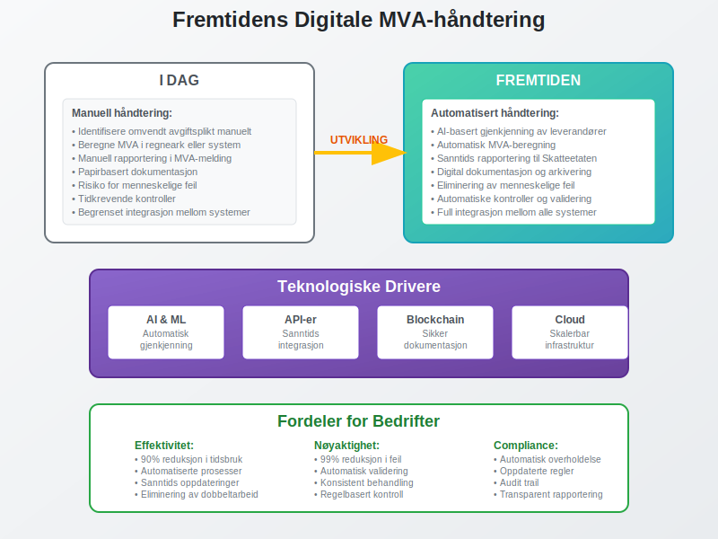
Praktiske Tips og Råd
Daglig Drift
Praktiske råd for håndtering:
- Marker fakturaer med omvendt avgiftsplikt tydelig
- Opprett egne leverandørkontoer for utenlandske leverandører
- Bruk standardiserte maler for beregninger
- Dokumenter alle vurderinger og beslutninger
Kontroll og Oppfølging
Kontrollrutiner:
- Månedlig gjennomgang av utenlandske kjøp
- Avstemming mellom regnskap og MVA-melding
- Kontroll av fradragsberegninger
- Arkivering av dokumentasjon
Når Søke Hjelp
Kontakt profesjonell hjelp ved:
- Usikkerhet om regelverket
- Komplekse internasjonale transaksjoner
- Kontroller fra Skatteetaten
- Implementering av nye systemer
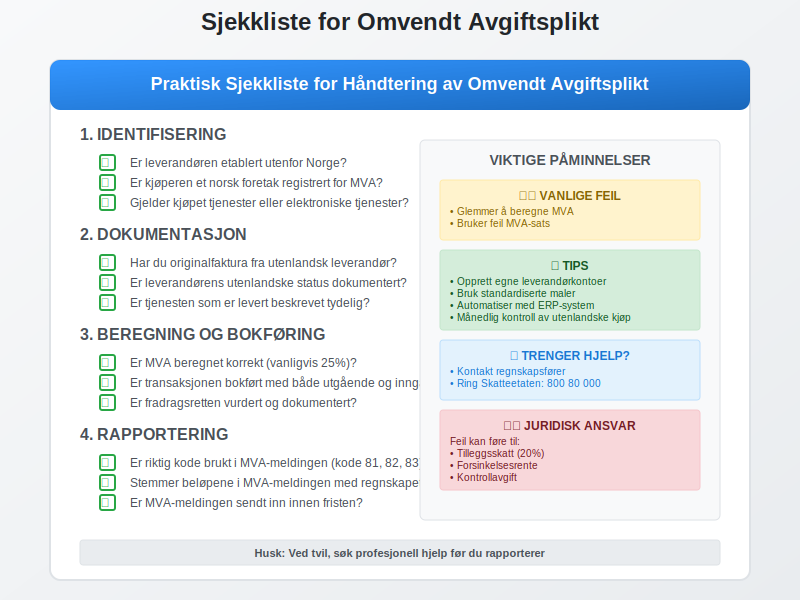
Sammendrag
Omvendt avgiftsplikt er et viktig verktøy i MVA-systemet som:
- Forenkler avgiftsinnkreving for utenlandske leverandører
- Sikrer at MVA betales på tjenester fra utlandet
- Krever at norske kjøpere tar ansvar for MVA-beregning
- Gir fradragsrett når betingelsene er oppfylt
Viktige punkter å huske:
- Identifiser når omvendt avgiftsplikt gjelder
- Beregn og rapporter MVA korrekt
- Dokumenter alle transaksjoner grundig
- Følg opp fradragsrett systematisk
- Hold deg oppdatert på regelverksendringer
Ved å forstå og følge reglene for omvendt avgiftsplikt sikrer du at ditt foretak overholder MVA-lovgivningen og unngår kostbare feil og sanksjoner.